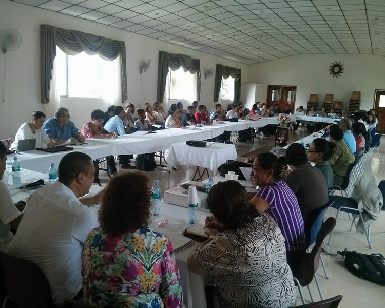
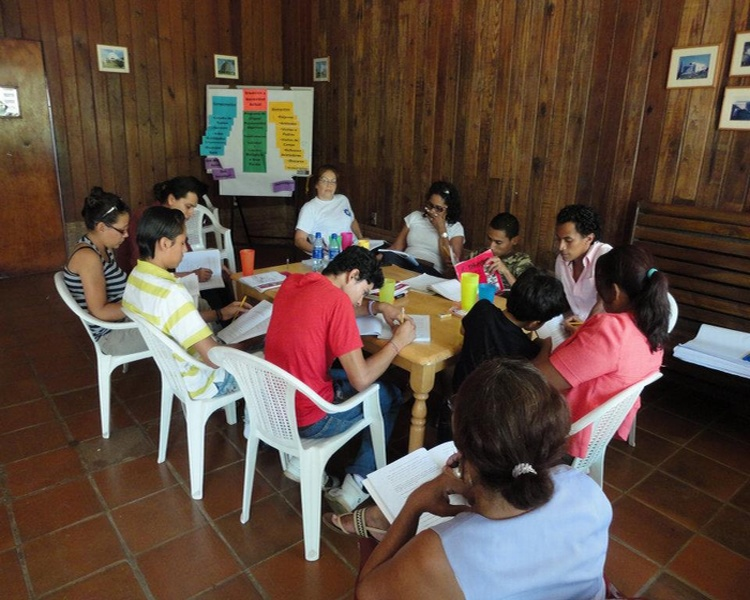
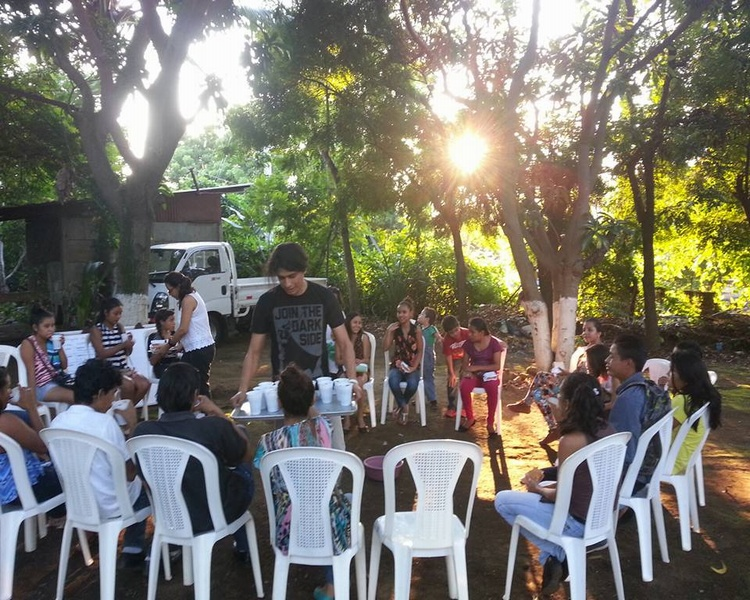

Ser bahá’í
Declararse bahá'í es responder al llamamiento de Dios en este día y formar parte de una comunidad mundial comprometida en ayudar a la humanidad para alcanzar la prometida era de paz, justicia y unidad universal. Uno se convierte en bahá'í al reconocer a Bahá'u'lláh como el Mensajero de Dios para esta época y esforzarse por cumplir Sus leyes y enseñanzas. Para inscribirse como miembro de la Fe bahá'í, se debe hacer una declaración de fe, ya sea oral o por escrito, ante la asamblea bahá'í más cercana. Contáctanos para ello.

Naturaleza del ser humano
Los pensamientos y acciones del ser humano están moldeados por dos naturalezas siempre presentes: la espiritual y la material. La naturaleza material del hombre es fruto de su evolución física y, aunque es indispensable para la existencia en este mundo, si se le permite que rija la consciencia, el resultado serán la injusticia, la crueldad y el egoísmo. De otra parte, la naturaleza espiritual del hombre se caracteriza por cualidades como el amor, la bondad, la amabilidad, la generosidad y la justicia. La naturaleza esperitual es la que ha de dominar nuestra existencia.

La vida del espíritu
La Revelación de Bahá'u'lláh afirma que el propósito de nuestras vidas es conocer a Dios y alcanzar Su presencia. Nuestra verdadera identidad es nuestra alma racional, cuya voluntad y poderes de comprensión nos permiten mejorarnos continuamente a nosotros mismos y a nuestra sociedad. Caminar un sendero de servicio a Dios y a la humanidad da sentido a la vida y nos prepara para el momento en que el alma se separa del cuerpo y continúa su viaje eterno hacia el Creador.